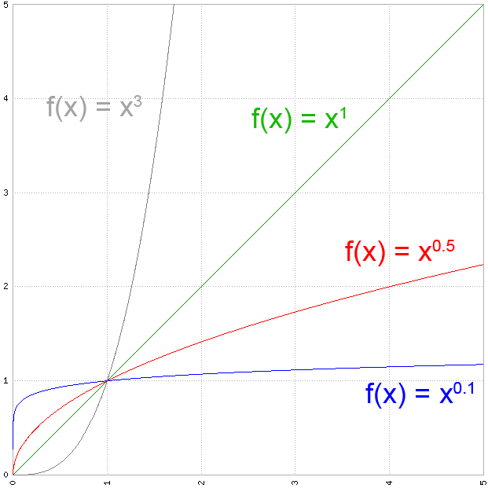
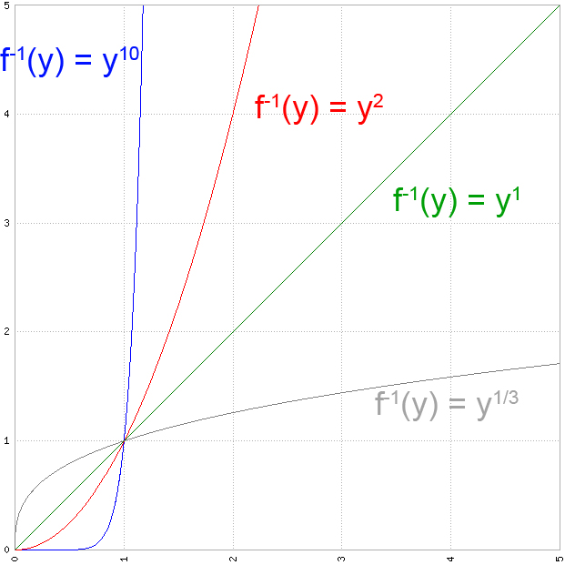
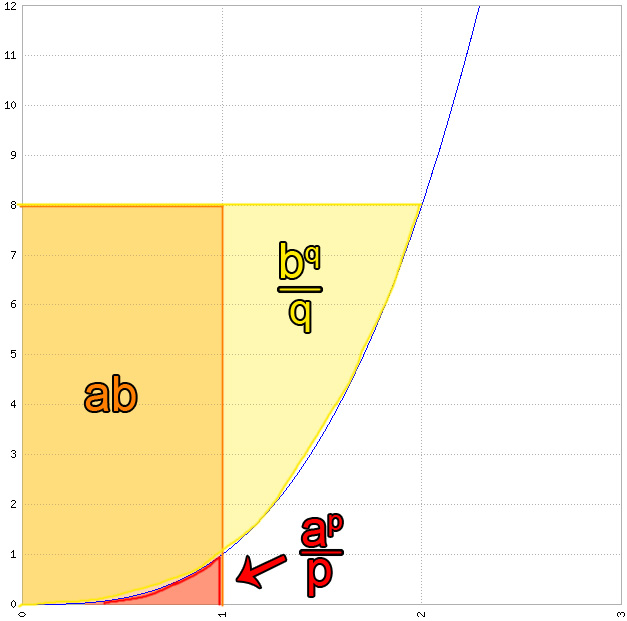

Young's Special Case!
Special Case
So we're actually gonna need a special case of the Young's Inequality we depict last time out to progress further. Without much further due here it is:
\begin{eqnarray}\label{eq:young-special} ab \leq \frac{a^p}{p} + \frac{b^q}{q}. \end{eqnarray} Well that looks different at first. Here is the initial Youngs’s Inequality from last time out: \begin{eqnarray}\label{eq:young} ab \leq \int_0^a f(x) dx + \int_0^b f^{-1}(y) dy. \end{eqnarray}
So we still have $ab$ on the left side. What changes though is the right side of the inequality, it looks much clearer without even integrals being involved. So here is the thing: It's a special case, so it has to make some kind of assumption so it's more restricted and in this case easier to look at. If you don't understand why we do this, don't worry. We first gonna look at the proof and in the end dissolve what was required to get there. The restriction is the conjugate index: \begin{eqnarray}\label{eq:restiction} p,q>1 \text{ where } \frac{1}{p}+\frac{1}{q} =1 \Leftrightarrow \frac{1}{p}+\frac{1}{q} =1. \end{eqnarray} Well, one equation and two inequalities and they don't look like they have much in common apart from their letters.
Proof
The trick is we restrict our inequality to functions of form $f(x)=x^{p-1}$ which we set into ineq. \ref{eq:young-special}. With that we can actually calculate both integrals.
\begin{eqnarray}\label{eq:young:first} \int_0^a f(x) dx = \int_0^a x^{p-1} dx = \frac{x^{p}}{p}|_0^a = \frac{a^{p}}{p} - 0 \end{eqnarray}
The second part is a little bit harder, because we need to calculate the inverse function $f^{-1}(y)$ of $x^{p-1}$. Finding the inverse is easy:
\begin{eqnarray}\label{eq:young:second} y=x^{p-1} \Leftrightarrow x=y^{\frac{1}{p-1}} \end{eqnarray}
The hard part is: we want to describe it by $q$ instead of $p$, so we end up with our special case ineq. \ref{eq:young-special}. So what we want to do is take our made up restriction \ref{eq:restiction} and convert it so we end up with some relation of $q$ to $\frac{1}{p-1}$.
\begin{eqnarray} \frac{1}{p}+\frac{1}{q} = 1 \Leftrightarrow p + q = pq \Leftrightarrow 0 = pq - p - q \end{eqnarray} So first we only multiply everything with $p$ and $q$ and restructure everything. Here comes the twist: \begin{eqnarray}\label{eq:q} 0 = pq - p - q +1 -1 \Leftrightarrow 1 = (p-1)(q-1) \Leftrightarrow \frac{1}{p-1} = q-1 \end{eqnarray} First trick is the $+1-1$ which is a common trick to consolidate equations. We put the $-1$ on the left side and consoliate right side to a two bracket term $(p-1)(q-1)$. After that it’s just restructuring so we actually can express our $x=y^{\frac{1}{p-1}}$ as $x=y^{q-1}$. The integral follows analog to the one we calculated in eq. \ref{eq:young:first}, it’s the same with other identifiers. So what we end up is Young’s special case: \begin{eqnarray} ab \leq \frac{a^{p}}{p} + \frac{b^{q}}{q}. \end{eqnarray}
Remark
So let's take a step back and look what we actually did here. Let's look back at Young's Inequality. We used a specific family of functions: $x^{p-1}$ ,where $p>1$. They are as we required for the Young's Inequality strictly monotonically increasing and unlimited with $f(0)=0$. The counterpart of $x^{p-1}$ is $x=y^{\frac{1}{p-1}}$ displayed on the right, which can be used to calculate the area above the curve of $f(x)$.
 
So let's just take the general function $x^{p-1}$ and look at it in terms of our equation. Here we used $p=4$ so the resulting function is $x^3$, which doesn't matter really. Now we can choose randomly an $a$ and $b$. And you can draw $ab$ ,$\frac{a^p}{p}$ and $\frac{b^q}{q}$ directly into our graph.

So what we actually did is: We narrowed it down to a specific kind of functions and used a little bit of cosmetics to make it look nice. So in our graph we used $p=4$, following our equation \ref{eq:q} from before we get $q = \frac{4}{3}$. We chose $a=1$ and $b=8$ as you can see in the graph. So this leads to
\begin{eqnarray} ab = 1*8 = 8 \leq \frac{a^p}{p} + \frac{b^q}{q} = \frac{1^4}{4} + \frac{8^{\frac{4}{3}}}{\frac{4}{3}}=12.25, \end{eqnarray} which holds true. As we learned in previous chapter the boundary case comes up when $f(a)=b$. So if we choose $f(a)=f(1)=1=b$. We get the equality: \begin{eqnarray} ab = 1 = \frac{a^p}{p} + \frac{b^q}{q} = \frac{1^4}{4} + \frac{1^{\frac{4}{3}}}{\frac{4}{3}}=1. \end{eqnarray} I hope that sums up a bit what the special case is about, it looks like a lot of complicated stuff with conjugate index and so on. But what we do, is only restrict ourselves to a special family of functions to simplify Young’s Inequality.